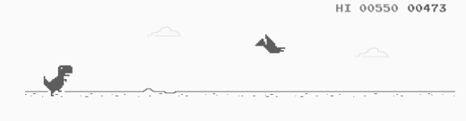

CHROMEDINO
When the connection drops, let the adventure begin with Chrome Dinosaur
A simple offline game filled with endless challenges and excitement!
When the connection drops, let the adventure begin with Chrome Dinosaur
A simple offline game filled with endless challenges and excitement!
The game Dino T-Rex (Chrome Dino) first appeared on Google Chrome browsers in 2014, and was created by designers Allan Bettes, Sebastian Gabriel, and Edward Jung. Now the game is no longer "like that" - since January 2016 there are new obstacles upon reaching 450 points - pterodactyls, and since May 2016 the night mode is turned on after reaching 700 points.
There's some good news: in 2018 a save feature that synchronizes with your Google account is available. The update is available in all browser versions over 72.1 In February 2020, a 3D version of the game was released. Now fans can enjoy the jumping of a green pixel dinosaur, but now a three-dimensional one, with background music as well.